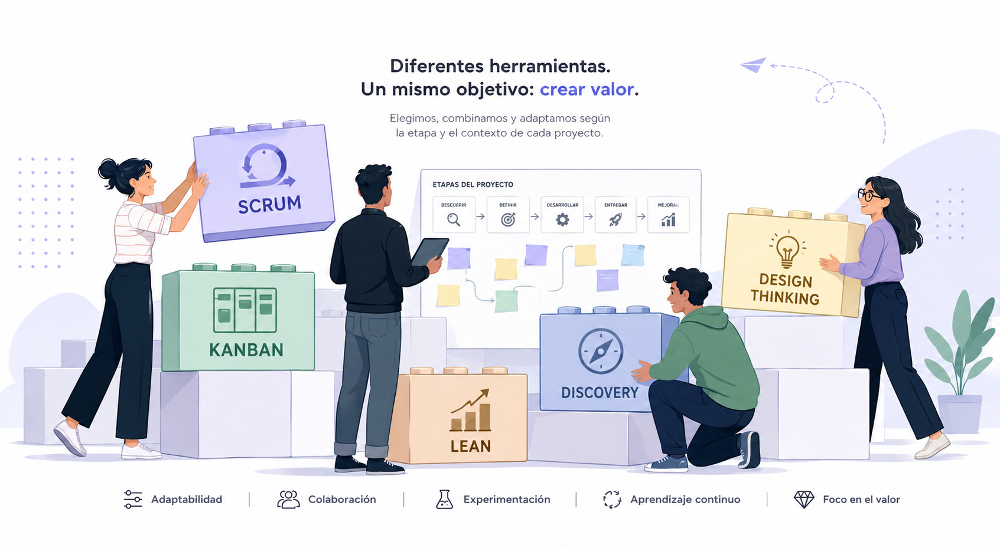

Entender
Definir el problema, stakeholders y objetivos; mapear contexto, restricciones y supuestos.
Metodología
No aplico una metodología como receta. Adapto herramientas y formas de trabajo al problema, al equipo y al momento del producto, combinando Product Discovery, Agile, QA e IA según el contexto.

Definir el problema, stakeholders y objetivos; mapear contexto, restricciones y supuestos.
Entrevistas, análisis de datos y pruebas rápidas para validar supuestos y generar hipótesis accionables.
Transformar hallazgos en hipótesis; priorizar por impacto y esfuerzo; definir criterios de éxito y riesgos.
Definir MVP, escribir User Stories, coordinar entregas y acompañar la ejecución con QA integrado.
Medir con métricas y pruebas de usuario; contrastar resultados con las hipótesis iniciales.
Revisar resultados, documentar aprendizajes y ajustar la hoja de ruta y prioridades.
User Story Map; backlog priorizado; definición de MVP; criterios de aceptación; plan de experimentos; reportes de métricas y aprendizajes; documentación de decisiones y riesgos.